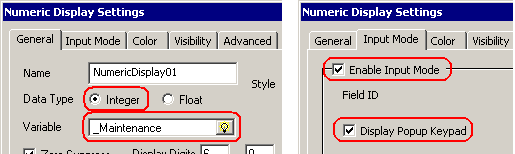

|
|
|
|
|
|
|
|
Maintenance mode allows you to perform maintenance to the panel without having alarm and data events logged and saved to the Runtime Data Location. All error events are saved regardless of mode, however, error events are displayed differently while in maintenance mode. You can use the maintenance mode feature to extract data from a target that does not support an Ethernet connection.
When maintenance mode is enabled (_Maintenance system variable set to 1), it affects the way the following events are displayed:
Alarms. In the Alarm Summary, alarms triggered while in maintenance mode are affected and are flagged (meaning that the rows are shaded). Flagged events cannot be saved or printed.
Variables. In the variable data logging, logging of data stops, and no data is written to the Runtime Data Location.
Errors. In the Event Log, errors that occur while in maintenance mode are flagged (meaning that the rows are shaded).
When in maintenance mode, the following functions are affected:
Recipe. When you try to save a recipe to file, an error message will display.
Data Logging. Data collection continues to occur, but the data records' Data Quality is marked as being in Maintenance Mode.
Video. You cannot record video, capture video, or print. An error displays and the operation stops.
Screen Capture. If you try to save to a Runtime Data Location or print while in maintenance mode, an error displays and the operation stops.
This procedure describes how to set up maintenance mode on a target machine that supports a CF Card/SD Card. From a panel on the target machine, you can disable logging, remove the CF Card/SD Card, and extract data.
On the panel, draw a Numeric Display (see Section 11.3.1, Setting Up Numeric Display) or some other object to change the value of an integer variable.
In the Numeric Display Settings dialog box, set the Data Type to Integer and the Variable to _Maintenance. In the Input Mode tab, select the Enable Input Mode and Display Popup Keypad check boxes.

In run time, touch the data display. When the keypad appears, enter a value of 1 for the _Maintenance system variable.
0: Indicates the panel runs normally.
1: Disables data logging, and allows you to remove the CF Card/SD Card and extract data.
After you place the panel in maintenance mode, ensure the CF Card/SD Card Indicator light turns off and remains off for at least 15 seconds before you remove the CF Card/SD Card.
Remove the CF Card/SD Card.
Place the CF Card/SD Card into your CF Card/SD Card reader, and perform a file transfer.
After you return the CF Card/SD Card to the target machine, reset the value in _Maintenance to 0.